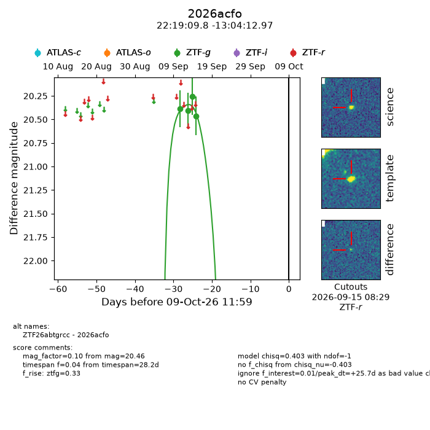
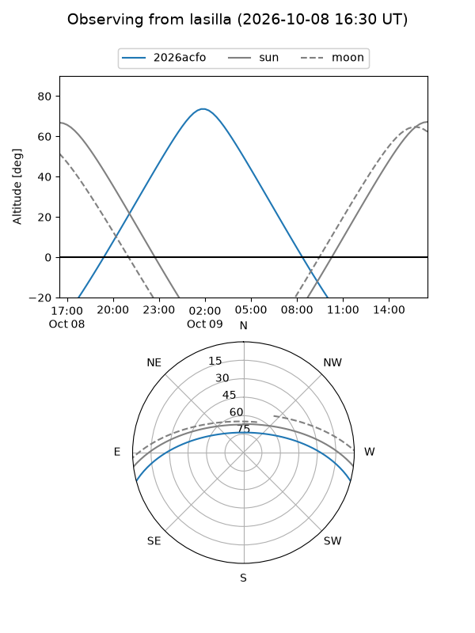
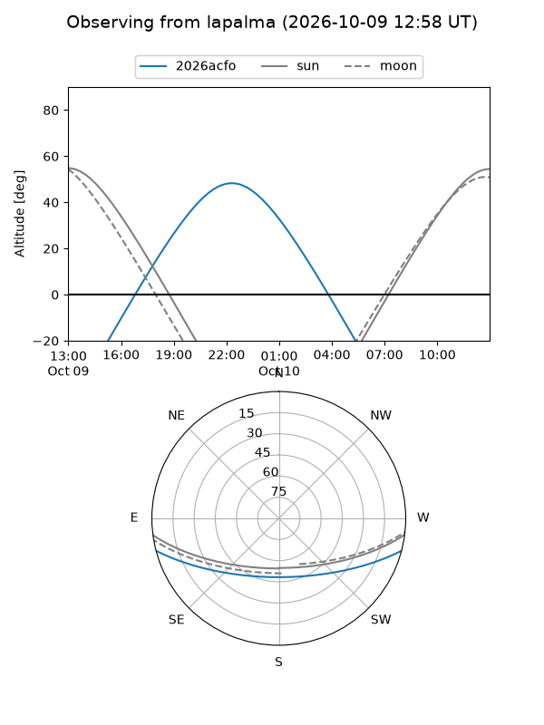
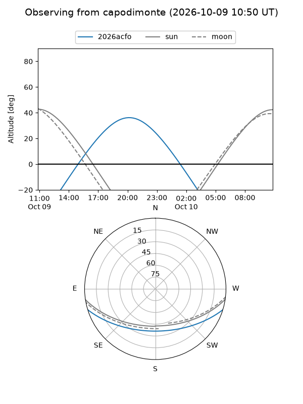
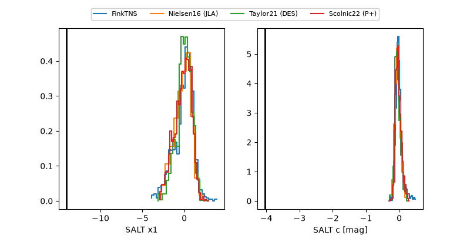

2026acfo
Target 2026acfo at 2026-10-09 12:01
Aliases and brokers:
FINK-ZTF: ztf.fink-portal.org/ZTF26abtgrcc
Lasair-ZTF: lasair-ztf.lsst.ac.uk/objects/ZTF26abtgrcc
ALeRCE-ZTF: alerce.online/object/ZTF26abtgrcc
YSE-PZ: ziggy.ucolick.org/yse/transient_detail/2026acfo
TNS name: wis-tns.org/object/2026acfo
Direct TNS query: direct search
alt names
ZTF26abtgrcc (ztf,fink_ztf)
2026acfo (tns,yse)
Coordinates:
equatorial (ra, dec) = 334.7908,-13.07027
equatorial (HMS+DMS) = 22:19:09.79,-13:04:12.97
galactic (l, b) = (46.8117,-51.77898)
Flags:
peak dt: +25.7
Photometry:
last ztfg=20.46
4 ztfg detections
Lightcurve

Visibility



Additional plots
